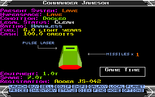

Two independent native versions
Return to top △The enhanced Atari ST and Amiga games are maintained in independent 68000 assembly source trees. The preserved original Atari version has its own build. The historical source archive remains untouched.
Amiga supplies its own screen handling, blitter and Fast RAM paths, raw keyboard and mouse input, disk access, Paula effects and native music replay. It is a port of the enhanced Atari-based game, not a reconstruction of the complete original Amiga executable.
The sources build with the bundled vasm assembler and vlink linker. Python and Pillow generate the editable PNG assets. See the repository for current build instructions.
Hull reference
Return to top △| Hull | Price (Cr) | Speed | Fuel (LY) | Missiles | Hold / expanded (t) | Laser mounts |
|---|---|---|---|---|---|---|
| Cobra Mk III | 100,000 | 22 | 7.0 | 4 | 25 / 35 | All four |
| Adder | 27,000 | 19 | 6.0 | 1 | 8 / 12 | Front, rear |
| Gecko | 32,500 | 24 | 7.0 | 2 | 9 / 11 | All four |
| Moray | 36,000 | 20 | 8.0 | 2 | 11 / 15 | All four |
| Cobra Mk I | 39,500 | 20 | 6.0 | 3 | 14 / 20 | All four |
| Fer-de-Lance | 143,500 | 24 | 8.5 | 3 | 9 / 11 | All four |
| Python | 205,000 | 16 | 8.0 | 4 | 106 / 125 | All four |
| Boa | 240,000 | 19 | 9.0 | 6 | 132 / 155 | Front, rear |
| Anaconda | 400,000 | 11 | 10.0 | 16 | 215 / 253 | All four |
| Asp Mk II | 895,000 | 31 | 12.5 | 1 | 6 / 9 | Front |
| Sidewinder | 20,500 | 29 | 5.0 | 1 | 4 / 5 | Front |
| Krait | 30,500 | 24 | 6.0 | 0 | 10 / 12 | Front |
| Mamba | 37,500 | 25 | 6.0 | 2 | 10 / 12 | Front |
Speed uses native game units; hold capacity includes equipment. Prices are the full purchase prices. Trade-in is 60%; ordinary equipment resale is 50%. Offer lists depend on economy and government.
All purchasable hulls have two 24-point shields and 96 energy in four banks. Different weapon resistances produce different effective durability. Those defences, recharge, speed, turn limits and missile capacity are shared by player and AI versions of the same hull. AI currently spawns without an Energy Unit. Worm escape capsules have no shields.
Laser and missile resistance are separate; the existing ship-class collision rules remain separate again. A heavier hull is not made equivalent to a lighter one merely because their displayed energy bars have the same length.

AI lasers and damage
Return to top △| Player rating | Pulse | Beam | Military |
|---|---|---|---|
| Harmless · Mostly Harmless · Poor | 90% | 7% | 3% |
| Average · Above Average · Competent | 70% | 21% | 9% |
| Dangerous · Deadly · Elite | 50% | 35% | 15% |
Each ordinary AI ship draws a laser when created and keeps it. Police Vipers upgrade a Pulse result to Beam without another roll. Cougar always uses Beam, Constrictor Military, Thargoids Beam and Tharglets Pulse. Both alien weapons remain light blue.
Successful hits use the same base damage for the same weapon class, without an extra random ×1/×2 multiplier. AI accuracy retains its existing distance-dependent miss chance. Pulse has at least ten AI steps between shots; Beam and Military bursts last 6–18 steps, with damage opportunities every six and three steps respectively. Aim is checked throughout a burst.
All guided missiles use 60 base damage before resistance. A fully charged Cobra Mk III is destroyed by the second same-side missile impact without recharge. The missile keeps its forward speed while turning, so a nearby target can require a wider intercept arc.
World, surfaces and sound
Return to top △Seeded planet surfaces cover the whole sphere: flying around a world reveals the other hemisphere rather than regenerating its geography. Land, sea and crater markings are optional through Planets. Stars controls the distant sky separately from the moving flight starfield.
The common frame limit is three vertical blanks: at most about 16.67 updates per second at 50 Hz, or 20 at 60 Hz. Rendering that already took this long receives no extra delay. Both hyperspace types use a three-second tunnel timer on Atari ST to suit its longer hyperspace sound; Amiga retains a two-second timer. The final ring then travels out of view, so these timers do not represent the total animation length.
Atari uses its PSG. Amiga uses Paula, with the original Amiga music and sampled effects plus the new beam, RCS, throttle and radio voices. The radio notification is one short beep. Identification keeps its own sound.
Radio without changing the simulation
Return to top △The radio observes completed AI decisions. A separate cosmetic random stream decides whether and which message is sent, so chatter does not consume the random values used for encounters or combat. Each AI category has ten texts and a 50% event chance.
A queued message stores its sender and recipient IDs. Removing a ship or reusing a slot cannot change an old message. The queue holds three entries and uses one seven-second timer, paused in UI. Stations retain their own event rules and message sets.
Building and further reading
Return to top △On Windows, install Python 3.10+ and Pillow, then run the corresponding build script from the repository root. The assembler and linker are bundled.
python -m pip install Pillow
.\build_atari.bat
.\build_amiga.bataltgfx=yes selects the grey artwork. altgfx=no selects the original artwork. On Amiga, frame=no removes the cockpit frame and display= selects a screen mode. These are build-time choices; gameplay preferences are described under Game Options.